Camioneta clásica
Juguete de madera con motor eléctrico · se arma sin cola · 30 piezas
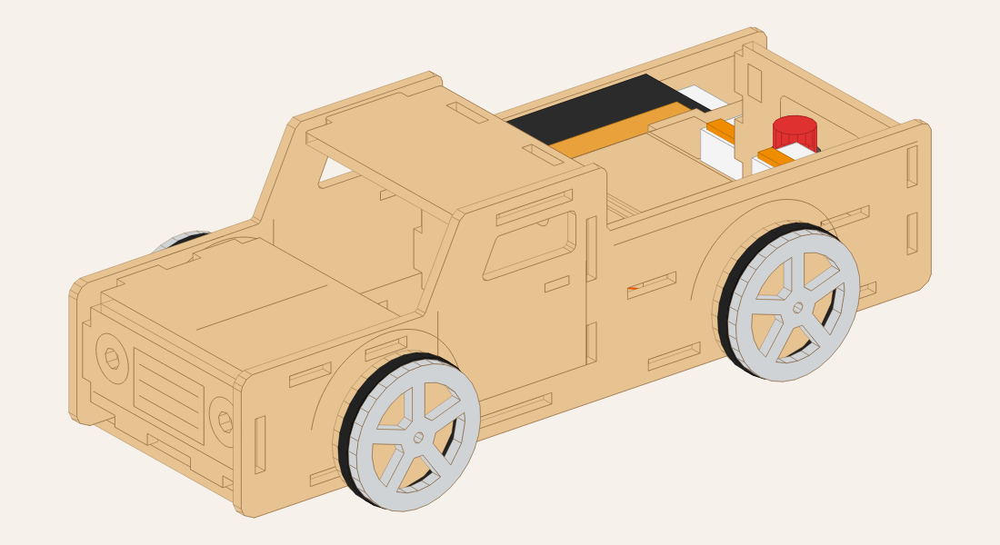
Qué trae el kit
| Madera (MDF de 3 mm) | Electrónica y otros |
|---|
- 2 costados, piso, piso de la caja, capó, techo, frente, pared de la cabina y portón.
- 2 soportes del motor.
- 4 ruedas (3 discos cada una), 4 arandelas y la polea (3 discos).
|
- 1 motor 3 V tipo 130 con cables.
- 1 portapilas 2 x AA con cables + 2 pilas AA.
- 1 pulsador de 12 mm con traba, con cables.
- 3 bornes sin soldar (tipo Wago 221).
- 4 o-rings 31 x 3 mm (cubiertas) y 1 gomita de silicona (transmisión).
- 2 palitos de brochette de 3 mm (ejes de 90 mm).
- Cinta doble faz.
|
No lleva cola. Todas las piezas encastran a presión: si una pestaña no entra, no la
fuerces; pedile a un adulto que la lije un poquito. Armar con un adulto. Piezas chicas: no apto para menores
de 3 años.
¿Cómo funciona?
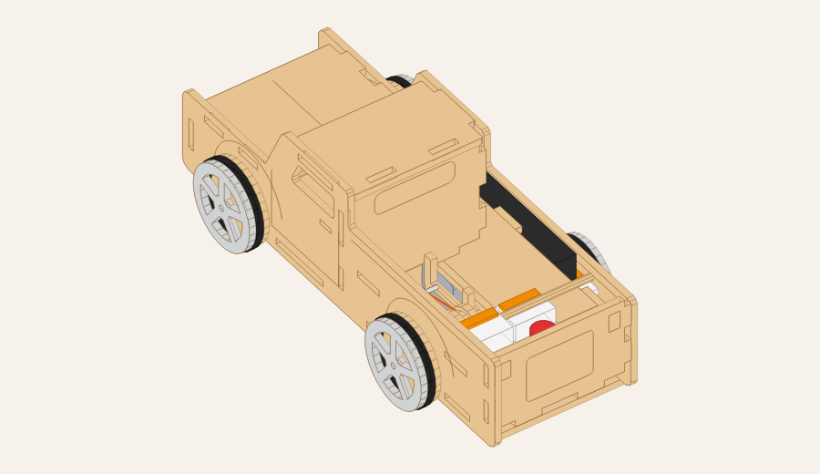
- Las pilas guardan la energía. Cuando apretás el botón, se cierra el camino (el
circuito) y la corriente viaja de la pila al motor y vuelve a la pila.
- El motor gira muy rápido pero con poca fuerza.
- La goma pasa por el eje finito del motor y por la polea grande del eje de atrás. Como la
polea es mucho más grande, gira más despacio pero con más fuerza: así puede mover la camioneta. Es lo mismo
que hacen los cambios de una bicicleta.
- Mirá por la ventanita de la caja: vas a ver la goma y la polea girando.
Armado
1Ruedas y polea
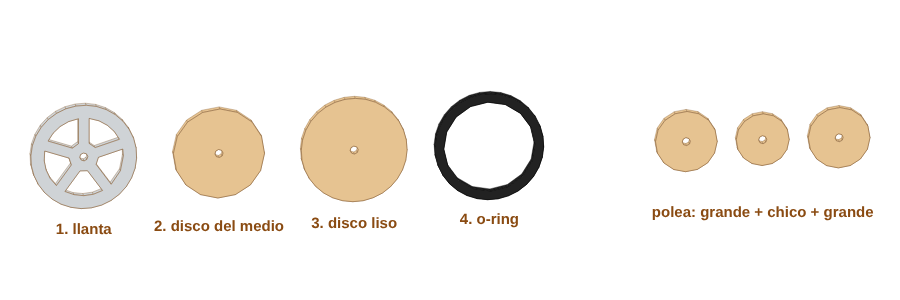
Todavía no se arman: los discos se meten en el eje más adelante. Separá para cada rueda: llanta,
disco del medio y disco liso, y un o-ring. La polea son 3 discos: grande, chico y grande.
2Soportes del motor
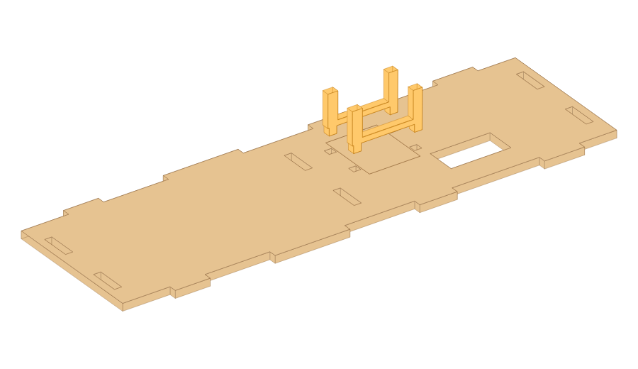
Encastrá los 2 SOPORTES (los que tienen forma de U) en el PISO, en las ranuras del medio.
3Primer costado
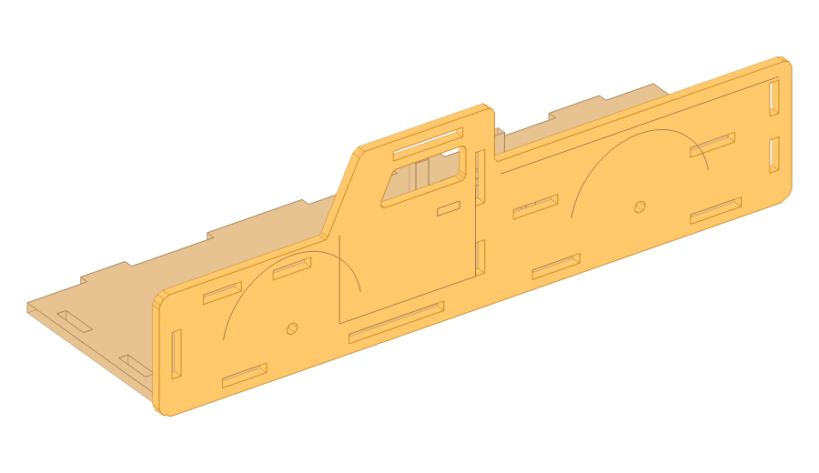
Apoyá un COSTADO acostado en la mesa, con el dibujo de la puerta hacia abajo. Encastrá el piso en las
ranuras de abajo del costado.
4Frente, cabina y portón
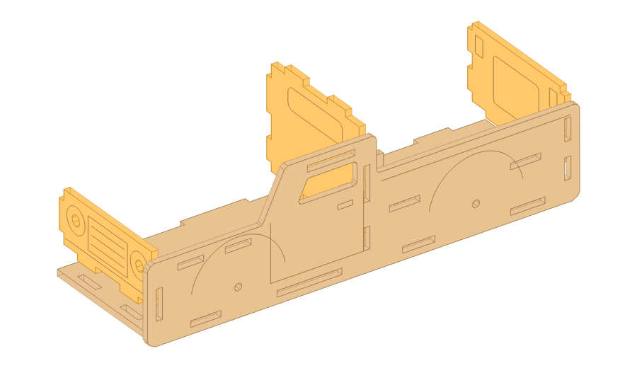
Encastrá el FRENTE (con los faros) adelante, la pared de la CABINA en el medio y el
PORTÓN atrás. Cada uno entra en el piso y en el costado.
5Motor, eje trasero y goma
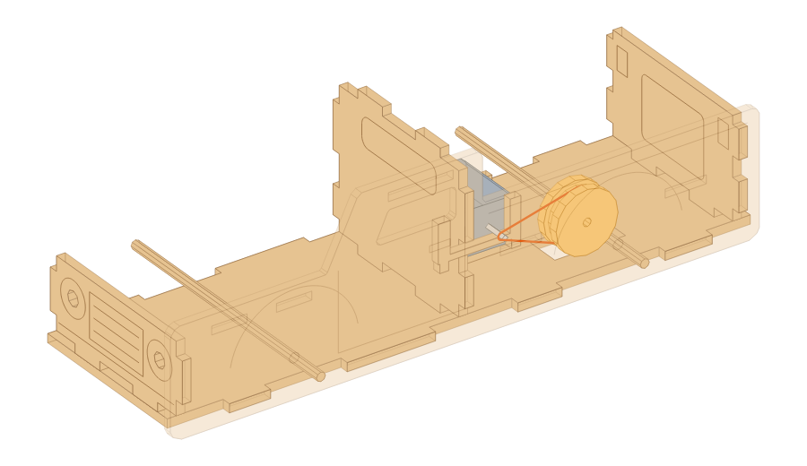
Apoyá el motor en la U de los soportes, con el eje hacia el lado de la ventanita. Pasá el
eje trasero por el agujero de atrás del costado y metele la polea (grande + chico + grande).
Poné la gomita en el eje del motor y en la canaleta de la polea. Pasá también el eje delantero.
6Caja, capó y techo
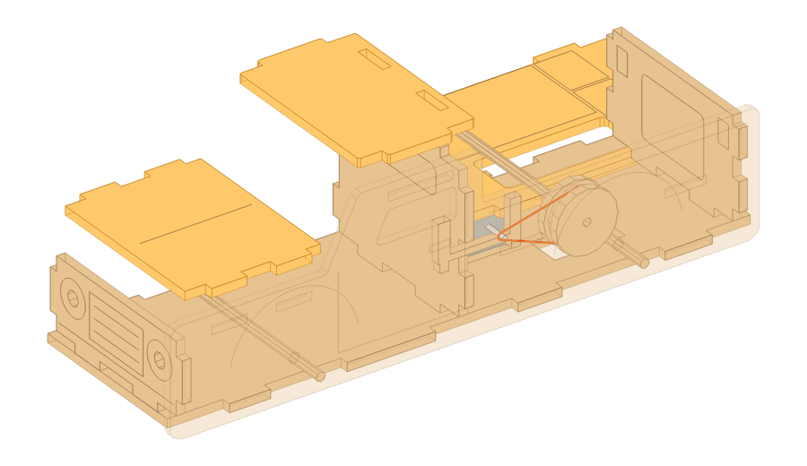
Encastrá el piso de la CAJA arriba del motor (lo deja apretado en su lugar), el CAPÓ y el
TECHO.
7Cerrar con el otro costado
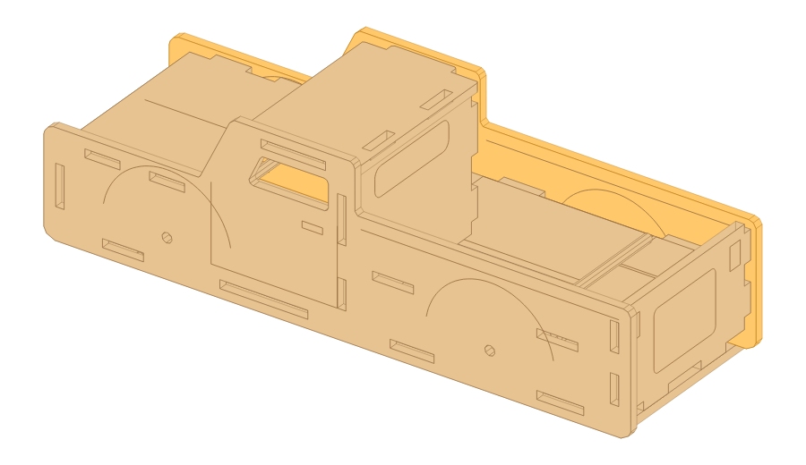
Poné el otro COSTADO encima, haciendo coincidir todas las pestañas con sus ranuras, y los ejes con
sus agujeros. Apretá de a poco, parejo, hasta que entre todo.
8Ruedas
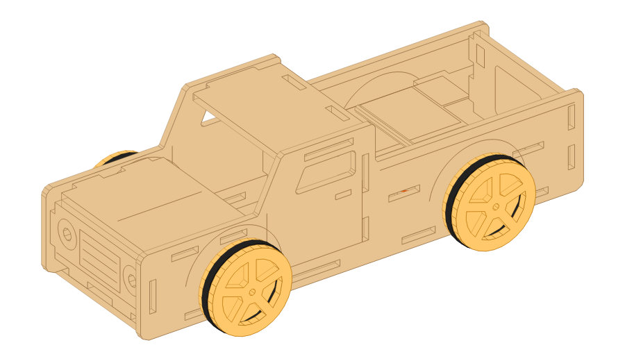
En cada punta de eje: una arandela, el disco liso, el disco del medio y la
llanta, bien apretados. Después estirá el o-ring y ponelo en la canaleta. Las ruedas aprietan los
costados y dejan todo firme.
9Pilas, botón y cables (sin soldar)
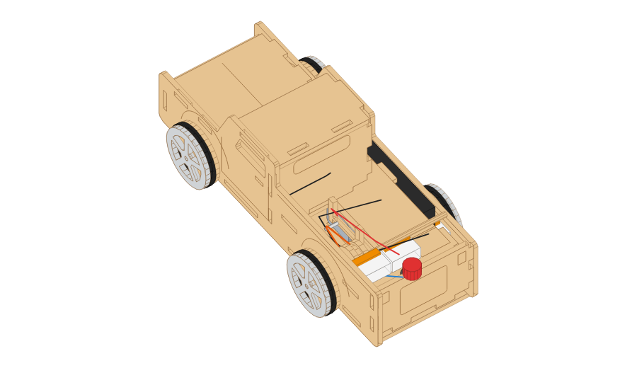
En la caja está todo dibujado. Pegá el portapilas con doble faz donde dice PILAS. Atornillá el
botón en el agujero redondo. Poné los bornes en B1, B2 y B3. Para conectar: levantá la palanquita,
meté el cable pelado y bajala. Los cables del motor suben por la ventanita y los del botón, por el agujerito.

| Borne | Cables |
|---|
| B1 | Rojo (+) de las pilas y un cable del botón |
| B2 | El otro cable del botón y un cable del motor |
| B3 | El otro cable del motor y el negro (−) de las pilas |
10¡Prueba!
Poné las pilas y apretá el botón. Si va para atrás, cambiá entre sí los cables del motor (B2 y B3). Si el
motor gira pero las ruedas no, la gomita patina: probá una más chica.
Diseño propio. Material: 1 hoja de 60 x 16 cm de MDF de 3 mm · ~7 m de corte láser.